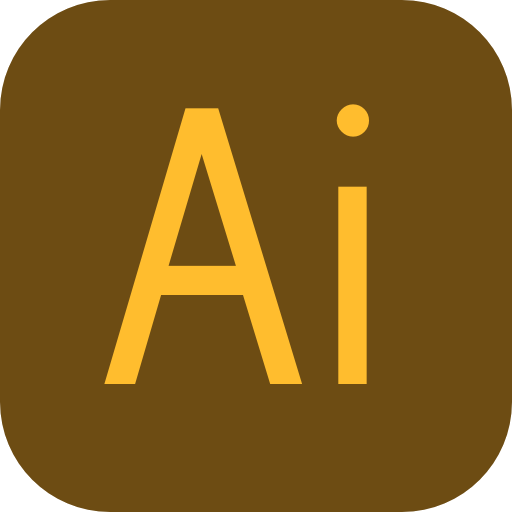
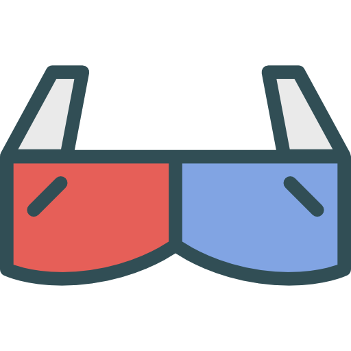
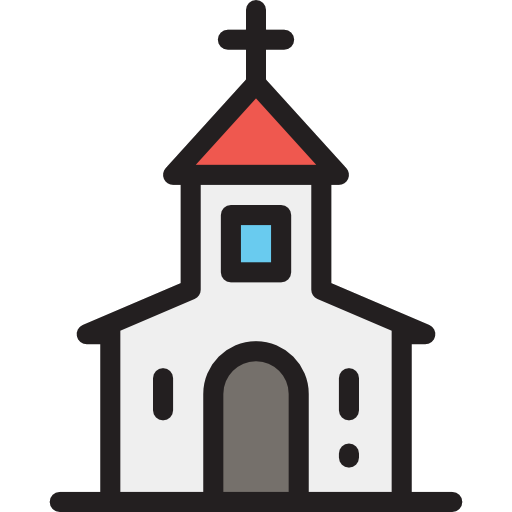

Joyce Melo
"Olá, eu sou Joyce de Melo Rodrigues, nascida em 19 de março de 1996, sou estudante de Sistemas de Informação na Universidade Federal de Lavras, estou a procura de conhecimento e crescimento."
CARACTERISTICAS
- Bem humorada
- Curiosa
- Gentil
- Calma
- Motivada
- Inteligente
- Dedicada
OJETIVOS
- Crescimento profissional e pessoal
- Ajudar e ser ajudado
- Ganhar aprendizado em todas as áreas de uma empresa
- Ser uma profissional de sucesso
CONTATOS
Joycee.mello@hotmail.comwww.facebook.com/Joycee.mello1
(35) 9 9838-6916
-
EDUCAÇÃO
2013: Ensino Médio, E.E. "Padre Anchieta"
2014: Sistemas de Informação, UFLA - Universidade Federal de Lavras
-
EXPERIÊNCIAS PROFISSIONAIS
2012: Atendente Comercial - JC Informática
2014: Técnica em Hardware de telefonia - Tech Cell
2015: Programação Android, Modelagem - Laboratório Educação Conectada
2016: Modelagem Arquitetônica, Java android, Programação Web- Laboratório Educação Conectada
2017: Designer, Prototipação de telas, Front-end - Comp Júnior
 2017: Em busca de novos desafios - Vida
2017: Em busca de novos desafios - Vida -
HABILIDADES
 Illustrator
Harware de Telefonia
 Modelagem Arquitetônica 3D
Software Android
Fazer bem as pessoas
-
INTERESSES
Igreja
 Artes
ArtesCinema
Fotografia
Música